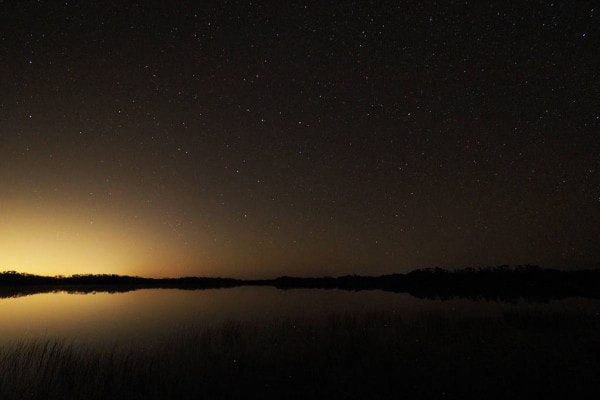
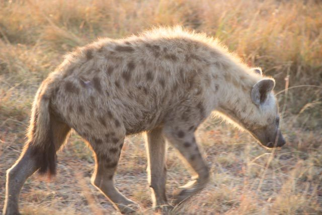
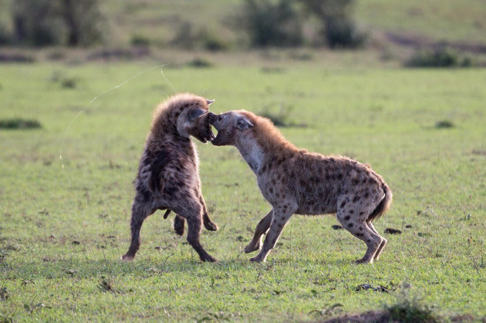
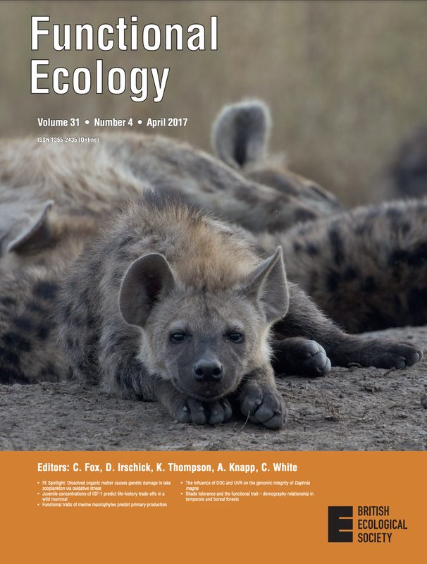
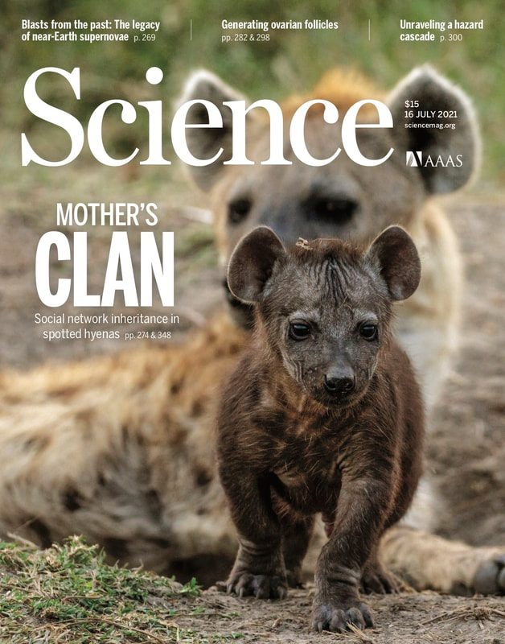
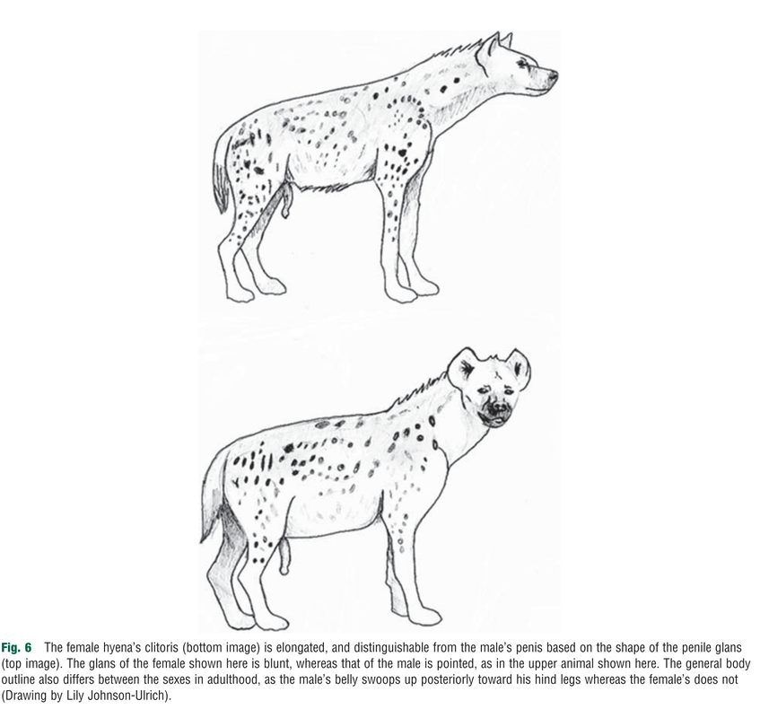
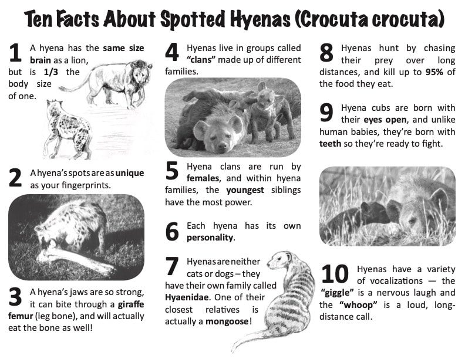

What is ArtScience?
Artistic and scientific exploration are both processes that involve creativity, curiosity, and innovation. ArtScience explores the complementary roles of art and science. This might include science inspired artwork, artwork that helps communicate scientific concepts, or artistic concepts that can be used to deepen our scientific understanding.
As an undergraduate student I struggled to decide between a major in Studio Art versus Psychobiology and eventually settled on a double major. I discovered ArtScience when a biology professor offered an ArtScience course where I was finally able to combine my two passions. In this course I developed my nighttime photography skills in order to document light pollution in Everglades National Park.
How has Art impacted my Science?
I am an avid photographer and enjoy drawing & painting as a hobby. These artistic skills have been an especially useful skill as an Animal Behaviorist in several ways.

Identifying subjects
The spotted hyenas I studied are identified by their unique spot patterns. Memorizing spot patterns is extremely difficult and photographs are often necessary to confirm the identity of a hyena, especially because hyenas don't often stick around long enough to get a good look. However, it can also be surprisingly difficult to get a crisp photo of a mobile subject under dim or backlit lighting conditions (we usually observed hyena behavior around dawn and dusk).

Documenting behavior
My photography skills have also helped me capture high-quality hyena behavior photos which are useful as teaching materials for animal behavior students.
Scientific journal covers
Two of my photographs were published on scientific journal covers.


Scientific Illustration
I have also used my drawing skills to contribute educational materials to pamphlets, book chapters, and encyclopedia articles. While photographs accurately capture reality, scientific illustrations capture the ideal subject without any extraneous details. This is one reason why medical textbooks or bird identification guides use illustrations over photographs.

